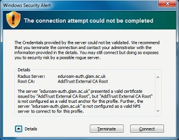

Below is a step by step guide which will walk you through the process of connecting to the Eduroam wireless service, on to configuring access to your email accounts and on to printing your work directly from your device (where available)
The Eduroam service provides you with internet access on wireless network connections for your own equipment.
The service is now available at a number of University of South Wales locations, as displayed on our campus wireless map
This guide will show you how to connect to the Eduroam wireless network using a PC or laptop with Windows 7. The instructions in this guide will also appear similar to those required for Windows Vista, but users of older, discontinued Windows products (such as XP) may find some instrustions will vary and may prefer to download the seperate Windows XP guide in PDF format listed below.
If you would like to connect a computer with other operating systems, please contact IT Services Customer SUpport , or see our other Eduroam guides.
In order to access the Eduroam network you must ensure that you have activated your university IT account and agree to be bound by our IT service terms and conditions whilst using our services.
IT account activation can be performed via the SSAA webpage: https://ssaa.southwales.ac.uk
Locate a suitable area where a wireless signal can be received (see the campus wireless map for details).
After Windows 7 loads you should see your desktop, wait for Windows 7 to finish loading all startup
items.
At this point, ensure that the wireless adapter is switched on.
Access the wireless configuration by moving your mouse cursor over the wireless network icon in the
system tray and left clicking once.
A list of available wireless networks should now be listed, if in an appropriate area Eduroam should be listed, move your mouse cursor and left click on the Eduroam entry, after which select the ‘Connect automatically’ tick box, this will ensure that your computer automatically connects to the Eduroam network when it recieves a signal.
The computer will now prompt you to enter your University username and password, after entering
your University username and password, please select the ‘OK’ button, this will initiate joining the
Eduroam wireless network.
Username: Please enter your University student id number followed by glam.ac.uk if you id starts 13,12,11 or newport.ac.uk if your enrolment number starts 200 or 100
Password: Enter your current University password
The first time you connect to the Eduroam network, you will be prompted to accept the server
certificate, select ‘Connect’ to accept

The first time you connect to the Eduroam network, the computer may ask you which network
location you would like to set, select ‘Public network’, this will ensure that resources on your PC are
not shared with other users on the network.
Your device should now be configured successfully for use with the Eduroam wireless network, in
order to start using the service, please load up Internet Explorer or your favourite web browser.
Important note
It is important to note that under the terms of the University rules and regulations by which all users agree through the process of logging on to the IT system via Eduroam or University PCs.
You are directly responsible for any activity conducted through your IT account, either by yourself or another user, and will be considered responsible for any misconduct or breach of the regulations conducted from that IT account.
Therefore it is important that you keep your account login information safe and do not share your login details with another student for any reason.
Print this guide:
How to… Access Eduroam using Windows
The University of South Wales offers all enrolled students the use of a free personal e-mail account which up until now has only been available via Glamlife, but it can now be accessed via your Windows
computer using Microsoft Outlook.
Your e-mail account includes a calendar, notes and an address book to organise and store your contacts, and provides more than 6Gb of storage space.
To use your University email on your Windows computer you first need to configure the device to
connect to the University email servers.
As the University student email is run by Google, configuring the University email system is similar to
setting up a Gmail account.
The example pictures in the following pages are using Microsoft Outlook 2010 installed on Windows 7,
but can be easily configured for use with other devices as long as they support the IMAP email protocol.
On your Windows computer, click on the Start Menu, then ‘All Programs’, then ‘Microsoft Office’
Click on ‘Microsoft Outlook 2010’.
Microsoft Outlook 2010 will now display a setup wizard on screen, click on ‘Next’ to start.
You will now be asked whether you would like to setup/configure an email account, select the ‘Yes’
radio button, and then select ‘Next’ to continue.
Upon selecting ‘Continue’, the wizard will ask you to enter account information, do not enter
anything at this point, and select the ‘Manually configure server settings or additional server types’
radio button instead, click on ‘Next’ to continue.
The wizard will now ask you to choose which service you wish to setup, select ‘Internet E-mail’, then
click on ‘Next’ to continue.
You will now be prompted to enter some of the mail server details, please enter the following information.
Your Name: Enter your name
E-mail Address: Enter your University email address (i.e: 12345678@glam.ac.uk)
Account type: IMAP
Incoming mail server: imap.gmail.com
Outgoing mail server (SMTP): smtp.gmail.com
Username: Enter your University email address (i.e: 12345678@glam.ac.uk)
Password: Enter your current University password.
Select ‘More Settings…’ to continue.

The ‘More Settings…’ box will now appear, click on the ‘Advanced’ tab, and enter the following information.
Incoming server (IMAP): 993
Use the following type of encrypted connection : SSL
Outgoing server (STMP): 465
Use the following type of encrypted connection : SSL
Then select the ‘Outgoing Server’ tab, and enter the following settings.
Place a tick in the ‘My outgoing server (SMTP) requires authentication‘ tickbox.
Select the ‘Log on using‘ radio box.
Username: Enter your University email address (i.e:
12345678@glam.ac.uk)
Password: Enter your current University password.
Select ‘OK’ to proceed.
Microsoft Outlook 2010 will now attempt to send a test message to confirm the mail server settings
have been setup correctly.
You can now send / receive your University email on your Windows computer.
To use this feature just attach the files you would like to print to an email and send to mobileprinting@southwales.ac.uk then you can release your jobs from any Canon Printer.